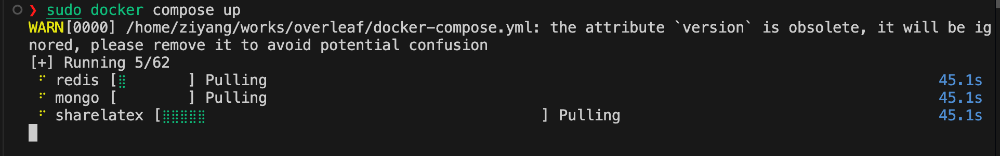
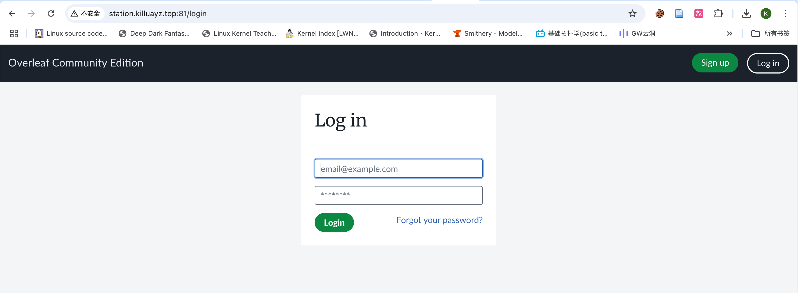
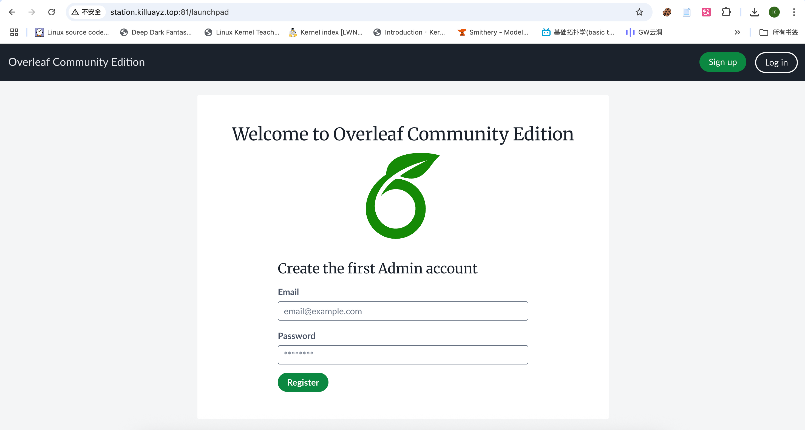

部署自己的Overleaf#
如果你觉得在线的overleaf有点慢？不稳定？多人协作需要充钱？ 那部署一个自己的overleaf能够解决以上所有的痛点。 借助Docker，我们可以十分方便地部署overleaf，接下来跟进步伐，here we go !
安装docker#
这里就不多介绍，请你自己查找一下如何安装docker
克隆overleaf源码#
git clone git@github.com:overleaf/overleaf.git
修改docker-compose配置#
进入overleaf目录，然后修改docker-compose.yml，这里我们只需要修改要映射的端口（这里我们映射到了81端口），其余保持不变即可
version: '2.2'
services:
sharelatex:
restart: always
# Server Pro users:
# image: quay.io/sharelatex/sharelatex-pro
image: sharelatex/sharelatex
container_name: sharelatex
depends_on:
mongo:
condition: service_healthy
redis:
condition: service_started
ports:
- 81:80
stop_grace_period: 60s
volumes:
- ~/sharelatex_data:/var/lib/overleaf
########################################################################
#### Server Pro: Uncomment the following line to mount the docker ####
#### socket, required for Sibling Containers to work ####
########################################################################
# - /var/run/docker.sock:/var/run/docker.sock
environment:
OVERLEAF_APP_NAME: Overleaf Community Edition
OVERLEAF_MONGO_URL: mongodb://mongo/sharelatex
# Same property, unfortunately with different names in
# different locations
OVERLEAF_REDIS_HOST: redis
REDIS_HOST: redis
ENABLED_LINKED_FILE_TYPES: 'project_file,project_output_file'
# Enables Thumbnail generation using ImageMagick
ENABLE_CONVERSIONS: 'true'
# Disables email confirmation requirement
EMAIL_CONFIRMATION_DISABLED: 'true'
## Set for SSL via nginx-proxy
#VIRTUAL_HOST: 103.112.212.22
# OVERLEAF_SITE_URL: http://overleaf.example.com
# OVERLEAF_NAV_TITLE: Overleaf Community Edition
# OVERLEAF_HEADER_IMAGE_URL: http://example.com/mylogo.png
# OVERLEAF_ADMIN_EMAIL: support@it.com
# OVERLEAF_LEFT_FOOTER: '[{"text": "Another page I want to link to can be found <a href=\"here\">here</a>"} ]'
# OVERLEAF_RIGHT_FOOTER: '[{"text": "Hello I am on the Right"} ]'
# OVERLEAF_EMAIL_FROM_ADDRESS: "hello@example.com"
# OVERLEAF_EMAIL_AWS_SES_ACCESS_KEY_ID:
# OVERLEAF_EMAIL_AWS_SES_SECRET_KEY:
# OVERLEAF_EMAIL_SMTP_HOST: smtp.example.com
# OVERLEAF_EMAIL_SMTP_PORT: 587
# OVERLEAF_EMAIL_SMTP_SECURE: false
# OVERLEAF_EMAIL_SMTP_USER:
# OVERLEAF_EMAIL_SMTP_PASS:
# OVERLEAF_EMAIL_SMTP_TLS_REJECT_UNAUTH: true
# OVERLEAF_EMAIL_SMTP_IGNORE_TLS: false
# OVERLEAF_EMAIL_SMTP_NAME: '127.0.0.1'
# OVERLEAF_EMAIL_SMTP_LOGGER: true
# OVERLEAF_CUSTOM_EMAIL_FOOTER: "This system is run by department x"
# ENABLE_CRON_RESOURCE_DELETION: true
################
## Server Pro ##
################
## The Community Edition is intended for use in environments where all users are trusted and is not appropriate for
## scenarios where isolation of users is required. Sandboxed Compiles are not available in the Community Edition,
## so the following environment variables must be commented out to avoid compile issues.
##
## Sandboxed Compiles: https://docs.overleaf.com/on-premises/configuration/overleaf-toolkit/server-pro-only-configuration/sandboxed-compiles
SANDBOXED_COMPILES: 'true'
### Bind-mount source for /var/lib/overleaf/data/compiles inside the container.
SANDBOXED_COMPILES_HOST_DIR_COMPILES: '/home/user/sharelatex_data/data/compiles'
### Bind-mount source for /var/lib/overleaf/data/output inside the container.
SANDBOXED_COMPILES_HOST_DIR_OUTPUT: '/home/user/sharelatex_data/data/output'
### Backwards compatibility (before Server Pro 5.5)
DOCKER_RUNNER: 'true'
SANDBOXED_COMPILES_SIBLING_CONTAINERS: 'true'
## Works with test LDAP server shown at bottom of docker compose
# OVERLEAF_LDAP_URL: 'ldap://ldap:389'
# OVERLEAF_LDAP_SEARCH_BASE: 'ou=people,dc=planetexpress,dc=com'
# OVERLEAF_LDAP_SEARCH_FILTER: '(uid={{username}})'
# OVERLEAF_LDAP_BIND_DN: 'cn=admin,dc=planetexpress,dc=com'
# OVERLEAF_LDAP_BIND_CREDENTIALS: 'GoodNewsEveryone'
# OVERLEAF_LDAP_EMAIL_ATT: 'mail'
# OVERLEAF_LDAP_NAME_ATT: 'cn'
# OVERLEAF_LDAP_LAST_NAME_ATT: 'sn'
# OVERLEAF_LDAP_UPDATE_USER_DETAILS_ON_LOGIN: 'true'
# OVERLEAF_TEMPLATES_USER_ID: "578773160210479700917ee5"
# OVERLEAF_NEW_PROJECT_TEMPLATE_LINKS: '[ {"name":"All Templates","url":"/templates/all"}]'
# OVERLEAF_PROXY_LEARN: "true"
mongo:
restart: always
image: mongo:6.0
container_name: mongo
command: '--replSet overleaf'
volumes:
- ~/mongo_data:/data/db
- ./bin/shared/mongodb-init-replica-set.js:/docker-entrypoint-initdb.d/mongodb-init-replica-set.js
environment:
MONGO_INITDB_DATABASE: sharelatex
extra_hosts:
# Required when using the automatic database setup for initializing the replica set.
# This override is not needed when running the setup after starting up mongo.
- mongo:127.0.0.1
healthcheck:
test: echo 'db.stats().ok' | mongosh localhost:27017/test --quiet
interval: 10s
timeout: 10s
retries: 5
redis:
restart: always
image: redis:6.2
container_name: redis
volumes:
- ~/redis_data:/data
# ldap:
# restart: always
# image: rroemhild/test-openldap
# container_name: ldap
# See https://github.com/jwilder/nginx-proxy for documentation on how to configure the nginx-proxy container,
# and https://github.com/overleaf/overleaf/wiki/HTTPS-reverse-proxy-using-Nginx for an example of some recommended
# settings. We recommend using a properly managed nginx instance outside of the Overleaf Server Pro setup,
# but the example here can be used if you'd prefer to run everything with docker-compose
# nginx-proxy:
# image: jwilder/nginx-proxy
# container_name: nginx-proxy
# ports:
# - "80:80"
# - "443:443"
# volumes:
# - /var/run/docker.sock:/tmp/docker.sock:ro
# - /home/overleaf/tmp:/etc/nginx/certs
构建容器#
运行以下命令即可开始构建容器
sudo docker compose up
然后就是漫长的等待…

配置账号#
完成之后，访问对应的url，就可以看到网页界面：

但是此时，我们还没有管理员账户，此时我们只需要加一个后缀，访问http://station.killuayz.top:81/launchpad即可进入配置管理员界面

安装包#
刚开始使用一定会缺少很多包，不要慌，我们使用以下命令进入容器：
sudo docker exec -it sharelatex /bin/bash
进入容器后，使用命令，便可安装对应的包：
tlmgr install <包名称>
如果没有魔法，那可能需要换源，关于换源可以参考这篇文章